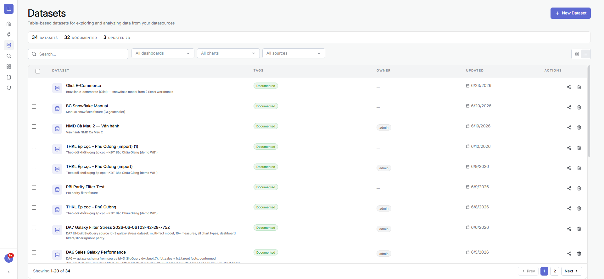
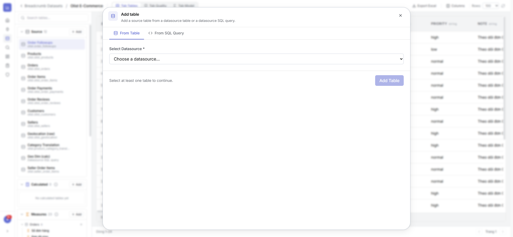
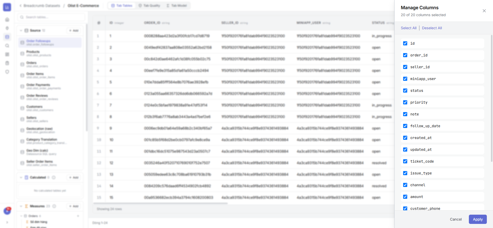
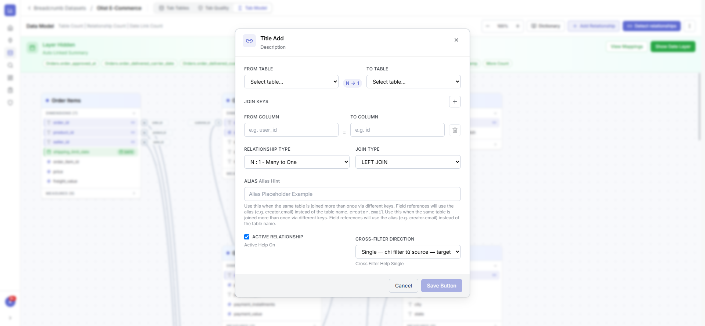
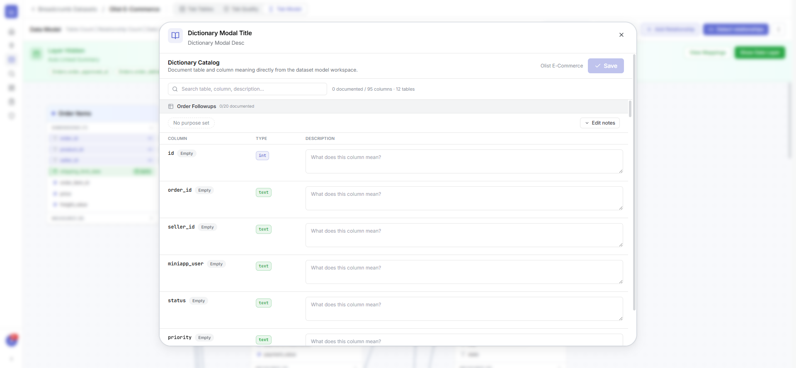
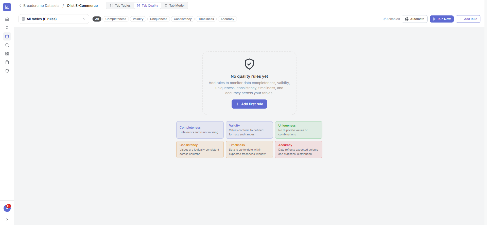

2.1Danh sách Dataset
Là gì: quản lý toàn bộ Dataset, lọc chéo theo dashboard/chart/nguồn, chia sẻ và xoá (có chặn phụ thuộc).
⚙ Cách làm
- Mở Datasets. Bấm New Dataset để tạo mới (đặt tên + mô tả).
- Bấm vào một Dataset để mở không gian làm việc của nó.

2.2Không gian làm việc Tables
Là gì: trung tâm của Dataset — sidebar gom bảng theo nhóm (Source / Calculated / Calendar / Measures), lưới xem trước dữ liệu, công cụ quản lý cột & xuất Excel. Có 3 tab: Tables · Quality · Model.
⚙ Cách làm
- Ở tab Tables, chọn một bảng trong sidebar trái để xem dữ liệu.
- Dùng Columns để ẩn/hiện cột, Export Excel để tải dữ liệu.
- Chuyển tab Model để dựng quan hệ, tab Quality để kiểm soát chất lượng.

2.3Thêm bảng vào Dataset
Là gì: ba cách đưa bảng vào mô hình — bảng vật lý, truy vấn SQL, hoặc bảng dẫn xuất.
⚙ Cách làm
- Trong nhóm Source (hoặc Calculated), bấm + Add.
- Chọn cách thêm:
- From Table: chọn nguồn → chọn bảng có sẵn.
- From SQL Query: chọn nguồn → viết câu SQL tuỳ ý.
- Calculated: viết SQL tham chiếu các bảng khác trong Dataset.
- Bấm Add Table — cột được tự suy luận kiểu dữ liệu.

2.4Quản lý cột & cột tính toán
Là gì: ẩn/hiện cột; thêm cột tính toán bằng công thức kiểu Excel (IF, LOOKUP, SUM…) hoặc JavaScript; đổi kiểu & định dạng (số/tiền/%/ngày).
⚙ Cách làm
- Bấm Columns trên thanh công cụ để mở bảng quản lý cột.
- Tích/bỏ tích để hiện/ẩn từng cột, rồi Apply.
- Để thêm cột tính toán: bấm + Add column, chọn Excel formula hoặc JavaScript, nhập công thức, xem preview rồi lưu.
- Đổi định dạng/kiểu: mở popup định dạng trên tiêu đề cột (số lẻ, ký hiệu tiền tệ, định dạng ngày…).

2.5Mô hình dữ liệu (ERD) & quan hệ
Là gì: sơ đồ trực quan các bảng và quan hệ. Tạo/sửa quan hệ với loại join, cardinality (1:1, 1:N…), khoá chính, hướng lọc chéo. Nút Generate Model tự dò quan hệ theo khoá ngoại.
⚙ Cách làm
- Mở tab Model của Dataset.
- Bấm Generate relationships để hệ thống tự đề xuất quan hệ, hoặc Add Relationship để tạo tay.
- Trong hộp thoại quan hệ: chọn From/To table, cặp cột khoá, Join type, Cardinality, hướng cross-filter → Save.
- Bấm vào một đường nối để sửa, hoặc bấm ✕ để xoá quan hệ.


2.6Measures — chỉ số nghiệp vụ
Là gì: chỉ số tái sử dụng (vd Doanh thu, AOV, % giao đúng hẹn). Định nghĩa một lần với biểu thức, bộ lọc riêng, định dạng, nhóm folder; hỗ trợ nhiều loại (sum, count_distinct, % of total, formula, window…).
⚙ Cách làm
- Trong sidebar, mở nhóm Measures và bấm + Add (chọn bảng đích).
- Nhập Label (tên hiển thị) và biểu thức (vd
SUM(total_revenue)hoặc tham chiếu measure khác). - Tuỳ chọn: thêm bộ lọc (WHERE), chọn định dạng (số/tiền/%), gán folder.
- Lưu — measure sẵn sàng dùng trong Explore và mini-app.

2.7Date table (chiều thời gian) & Từ điển
Là gì: tạo bảng lịch chuẩn (năm/quý/tháng/tuần, fiscal year, auto-join cột ngày) để phân tích theo thời gian. Dictionary tài liệu hoá ý nghĩa từng bảng/cột kèm % độ phủ.
⚙ Cách làm
- Date table: mở hộp thoại Calendar, đặt khoảng ngày, ngày đầu tuần, tháng đầu năm tài chính, bật auto-join cột ngày → Save.
- Dictionary: ở tab Model bấm Dictionary, điền mô tả cho bảng/cột; theo dõi % đã tài liệu hoá.

2.8Chất lượng dữ liệu (Data Quality)
Là gì: giám sát dữ liệu theo 6 chiều — Completeness, Validity, Uniqueness, Consistency, Timeliness, Accuracy — với 13 loại rule, gợi ý bằng AI, xem trước PASS/FAIL, chạy theo lịch và lưu lịch sử.
⚙ Cách làm
- Mở tab Quality, bấm + Add Rule.
- Chọn bảng, loại rule (not null, accepted values, range, unique, freshness, custom SQL…) và cột.
- Đặt mức độ (Info/Warning/Error), xem Live preview, bấm Run test để thử trên dữ liệu thật → Create Rule.
- Bấm Run Now để chấm điểm, hoặc Automate để chạy theo lịch.
